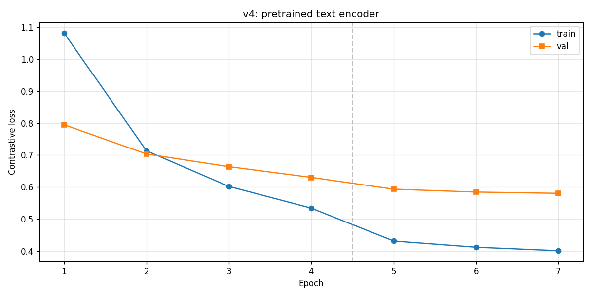
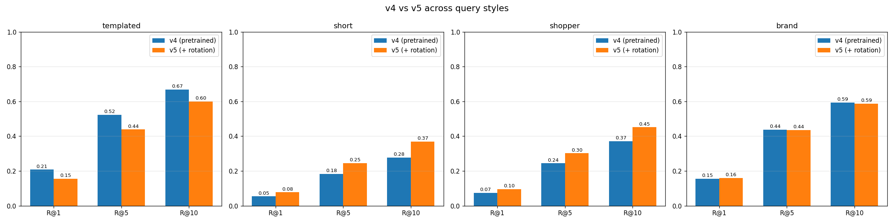

Course: DSCI471 — Deep Learning
Team: Richardson Chhin, Samii Shabuse
Date: May 2026
We built and evaluated a multimodal fashion product search system that maps natural-language queries to product images using a dual-encoder architecture trained with contrastive learning. A TF-IDF keyword baseline indexes the same catalog using rich product text (structured attributes plus optional JSON descriptions). On a held-out test gallery of 4,427 products, TF-IDF outperforms our final dual-encoder (v4) on Top-1 accuracy for all four query styles, with the largest gaps on templated (0.52 vs 0.17) and brand (0.65 vs 0.14) queries. The dual-encoder remains competitive on shopper-style queries at Top-5 (0.24 vs 0.22) and MRR (0.167 vs 0.161), indicating that cross-modal retrieval can surface relevant products in the top ranks even when rank-1 accuracy is low. We document an iterative v1→v5 model development path and conclude that keyword search remains stronger when the retrieval index is fully text-based, while dual-encoders are a viable approach when the deployment target is image galleries or text-to-image matching.
Keywords: multimodal retrieval, dual-encoder, contrastive learning, fashion e-commerce, TF-IDF baseline
E-commerce search often relies on exact keyword matching against product titles and metadata. Shoppers frequently describe items in natural language—for example, "a flowy floral dress with cap sleeves"—rather than using brand names or catalog terms. When keyword overlap is weak, retrieval quality drops, hurting product discovery, conversion, and user satisfaction.
Multimodal deep learning offers an alternative: learn a shared embedding space where text queries and product images are directly comparable. If a model can align visual and textual representations, it may retrieve semantically relevant products even without exact term matches.
Can a dual-encoder deep learning model, trained on paired fashion images and text descriptions, outperform traditional keyword-based e-commerce search?
We compare a dual-encoder retriever against a TF-IDF baseline on the same test gallery, query styles, and relevance criterion.
src/prepare_data.py).notebooks/richardson_experiment/).src/evaluate.py).Dual-encoder retrieval. CLIP (Radford et al., 2021) popularized contrastive pretraining of image and text encoders on web-scale data, enabling zero-shot retrieval by cosine similarity. Our project applies the same retrieval paradigm at course scale on a fashion catalog with domain-specific captions.
Fashion and e-commerce search. Prior work on fashion retrieval uses attribute prediction, siamese networks, and multimodal embeddings for recommendation and visual search. Structured attributes (color, category, gender) are common weak supervision signals—exactly what the Kaggle Fashion Product Images dataset provides.
Keyword baselines. TF-IDF and BM25 remain strong baselines for text-heavy catalogs, especially when product descriptions are detailed. Our baseline is intentionally strong: it indexes product_text that combines templated captions with JSON product descriptions when available.
We use the Fashion Product Images dataset (Aggarwal, Kaggle): ~44,400 professionally photographed products with CSV metadata (styles.csv) and per-product JSON records (styles/{id}.json).
Each product links:
images/{id}.jpgPipeline: src/prepare_data.py
src/captions.py (templated natural-language strings).articleType values (< 10 samples).Final corpus: 44,265 products.
| Split | Products | Purpose |
|---|---|---|
| Train | 35,412 | Dual-encoder training |
| Validation | 4,426 | Development / ablation metrics |
| Test | 4,427 | Final evaluation gallery |
Split ratio 80/10/10, stratified by articleType, random seed 42.
Outputs: data/processed/train.csv, val.csv, test.csv, products.csv, pairs.csv.
Each test product generates a query from its own row using four styles:
| Style | Description | Example |
|---|---|---|
| templated | Full attribute caption | A men navy blue shirts, for casual wear in fall. Turtle Check Men Navy Blue Shirt. |
| shopper | Short natural phrase | men's navy blue shirt |
| brand | Product display name | Turtle Check Men Navy Blue Shirt |
| short | Color + article type | navy shirt |
The same styles are used for TF-IDF and dual-encoder evaluation.
| Component | Specification |
|---|---|
| Image encoder | EfficientNetB0 (ImageNet pretrained), 224×224 input → dense layers → 384-d L2-normalized embedding |
| Text encoder | Frozen sentence-transformers/all-MiniLM-L6-v2 → 384-d L2-normalized embedding |
| Similarity | Cosine similarity (dot product of normalized vectors) |
| Training loss | Symmetric contrastive loss (InfoNCE-style), temperature τ = 0.07 |
Training procedure (src/train.py):
models/embeddings/train_text.npy, val_text.npy).Implementation: src/model.py, src/config.py.
TfidfVectorizer (English stop words, max 50,000 features) on test-gallery product_text.src/baseline_keyword.py, evaluation in src/evaluate.py.This baseline performs text-to-text retrieval with access to full product descriptions. The dual-encoder performs text-to-image retrieval—a harder cross-modal task.
src/metrics.py).Regenerate: python src/evaluate.py → docs/reports/evaluation_results.csv.
Note: Development ablations (Section 5) report Recall@K on the validation set. Final numbers in Section 6 are on the held-out test set.
Richardson led an iterative ablation (notebooks/richardson_experiment/01–08). Samii unified training and evaluation in src/.
| Version | Key change | Outcome |
|---|---|---|
| v1 | Scratch text encoder, templated captions, full dataset | Baseline dual-encoder |
| v2 | Four query-style captions (templated, short, shopper, brand) | More realistic query diversity |
| v3 | Random query style per training epoch (rotation) | Did not clearly beat v2 |
| v4 | Frozen MiniLM text encoder + EfficientNet image tower | Selected final model — best validation Recall@K |
| v5 | v4 + caption rotation | Did not beat v4 on validation |
| Model | R@1 | R@5 | R@10 |
|---|---|---|---|
| v1 (scratch text) | 0.106 | 0.332 | 0.488 |
| v2 (caption expansion) | 0.080 | 0.271 | 0.425 |
| v3 (rotation) | 0.068 | 0.247 | 0.387 |
| v4 (MiniLM text) | 0.208 | 0.523 | 0.668 |
Pretrained text encoding was the largest single improvement. v5 templated R@1 (0.155) remained below v4 (0.208). Source: docs/reports/ablations/v1_v2_v3_v4_comparison.csv, final_comparison.csv.
Figure 3 — Validation Recall@1 progression (templated query):
Figure 4 — v4 contrastive training loss and v4 vs v5 per query style (validation):


See src/config.py: batch size 64, τ = 0.07, 4 + 3 training epochs, image size 224, embedding dim 384.
Table 1 — Full metrics. Source: docs/reports/evaluation_results.csv.
| Model | Query type | Top-1 | Top-5 | MRR | Precision@5 |
|---|---|---|---|---|---|
| TF-IDF | templated | 0.523 | 0.805 | 0.649 | 0.161 |
| TF-IDF | shopper | 0.084 | 0.216 | 0.161 | 0.043 |
| TF-IDF | brand | 0.651 | 0.891 | 0.756 | 0.178 |
| TF-IDF | short | 0.073 | 0.201 | 0.146 | 0.040 |
| Dual-encoder (v4) | templated | 0.174 | 0.462 | 0.314 | 0.092 |
| Dual-encoder (v4) | shopper | 0.074 | 0.241 | 0.167 | 0.048 |
| Dual-encoder (v4) | brand | 0.140 | 0.402 | 0.270 | 0.080 |
| Dual-encoder (v4) | short | 0.052 | 0.176 | 0.126 | 0.035 |
Bold indicates higher value for each query type / metric pair.
Figure 1 — Test-set retrieval metrics (TF-IDF vs dual-encoder v4):

Figure 2 — Shopper queries: dual-encoder wins Top-5 and MRR despite lower Top-1:

No — on our test setup, the dual-encoder does not outperform TF-IDF on Top-1 accuracy for any query style.
| Query type | TF-IDF Top-1 | Dual-encoder Top-1 | Δ (dual − TF-IDF) |
|---|---|---|---|
| templated | 0.523 | 0.174 | −0.349 |
| shopper | 0.084 | 0.074 | −0.010 |
| brand | 0.651 | 0.140 | −0.511 |
| short | 0.073 | 0.052 | −0.022 |
The gap is largest when queries align with indexed text: brand (product names) and templated (full captions matching product_text).
Partial success: On shopper queries, the dual-encoder achieves higher Top-5 (0.241 vs 0.216) and MRR (0.167 vs 0.161). So cross-modal retrieval sometimes ranks the correct product in the top 5 even when it misses rank 1—relevant for UI designs that show multiple results.
Figure 5 — Dual-encoder success (templated query, correct product at rank 1):

Figure 6 — Head-to-head on a brand query (TF-IDF top row vs dual-encoder bottom row):

Figure 7 — Shopper-query failure (correct product not in dual-encoder top 5):

Interactive demos: notebooks/samii_experiment/04_final_results.ipynb.
Modality mismatch in evaluation. TF-IDF searches text against text, including JSON descriptions. The dual-encoder must match text queries to visual embeddings. Attribute text does not fully determine appearance (fabric, cut, pattern details).
Brand and templated queries favor keywords. Brand queries are exact product titles; templated queries closely mirror indexed captions. TF-IDF is optimized for this overlap.
Training signal vs deployment. The dual-encoder is trained with templated training captions but evaluated on diverse query styles. v2–v3 ablations showed query-style design matters; v4 improved substantially but did not close the gap to a strong text index.
src/evaluate.py) on a fixed test gallery was essential for a fair TF-IDF comparison.models/README.md); result CSVs are committed to git.We implemented a complete multimodal fashion search pipeline: data processing, dual-encoder training with contrastive loss, a TF-IDF baseline, and unified retrieval metrics on 4,427 test products. After five model iterations, v4 (EfficientNetB0 + frozen MiniLM) was selected as the final architecture.
Conclusion: Traditional keyword search outperforms our dual-encoder on Top-1 accuracy across all query types in this catalog, primarily because TF-IDF operates in text-to-text space with rich product descriptions. The dual-encoder remains a viable cross-modal retriever with better shopper-query Top-5 and MRR, and it is the appropriate choice when retrieval targets image embeddings directly.
Future work:
Aggarwal, Param. Fashion Product Images Dataset. Kaggle, 2019.
https://www.kaggle.com/datasets/paramaggarwal/fashion-product-images-dataset
Radford, A., et al. (2021). Learning Transferable Visual Models From Natural Language Supervision (CLIP). ICML.
Reimers, N., & Gurevych, I. (2019). Sentence-BERT: Sentence Embeddings using Siamese BERT-Networks. EMNLP.
Tan, M., & Le, Q. (2019). EfficientNet: Rethinking Model Scaling for Convolutional Neural Networks. ICML.
python -m venv venv && venv\Scripts\activate
pip install -r requirements.txt
python src/download_kaggle_data.py
python src/prepare_data.py
python src/prepare_data.py --check
python src/train.py
python src/evaluate.py
Grading guide: docs/GRADING.md
Artifacts: docs/ARTIFACTS.md
Presentation: docs/presentation.md · Slides: docs/presentation_slides.md
PDF report: docs/reports/final_report.pdf (or print final_report.html)
Interactive results: notebooks/samii_experiment/04_final_results.ipynb
| Richardson Chhin | Samii Shabuse |
|---|---|
| v1→v5 experiment design and notebooks | Unified src/ training and evaluation pipeline |
| Caption and query-style ablations | Data preprocessing and documentation |
| Final model selection (v4) | Test-set evaluation, Phase 4 notebook, final report integration |
Report generated for DSCI471 Final Project. Result tables reflect docs/reports/evaluation_results.csv as of project submission.